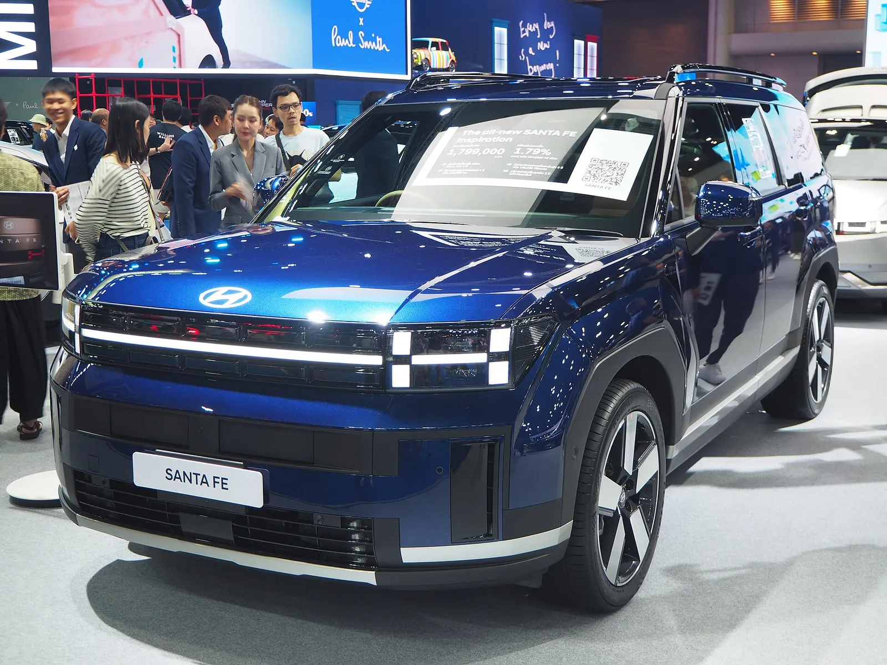
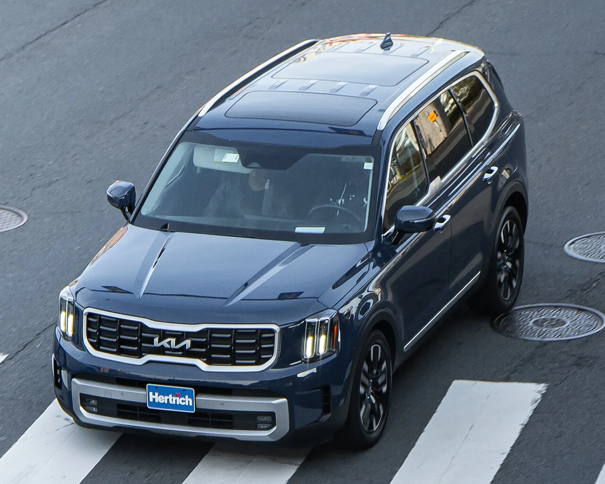
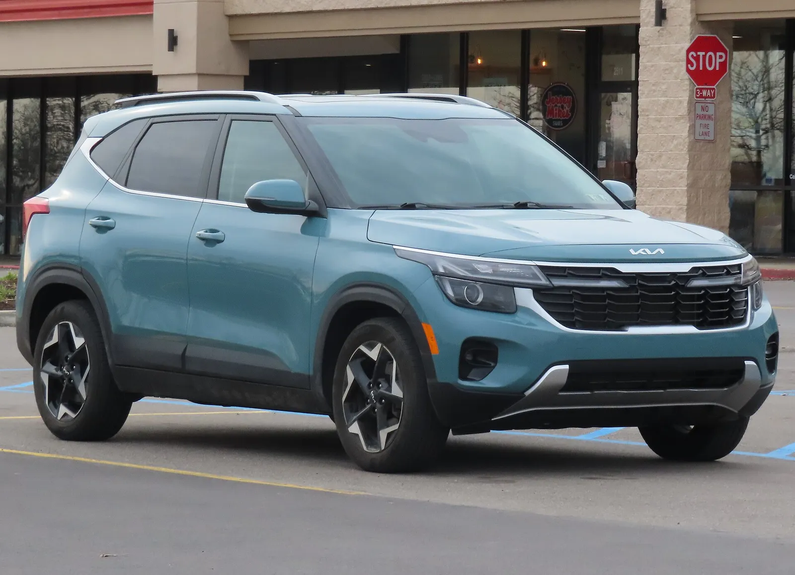
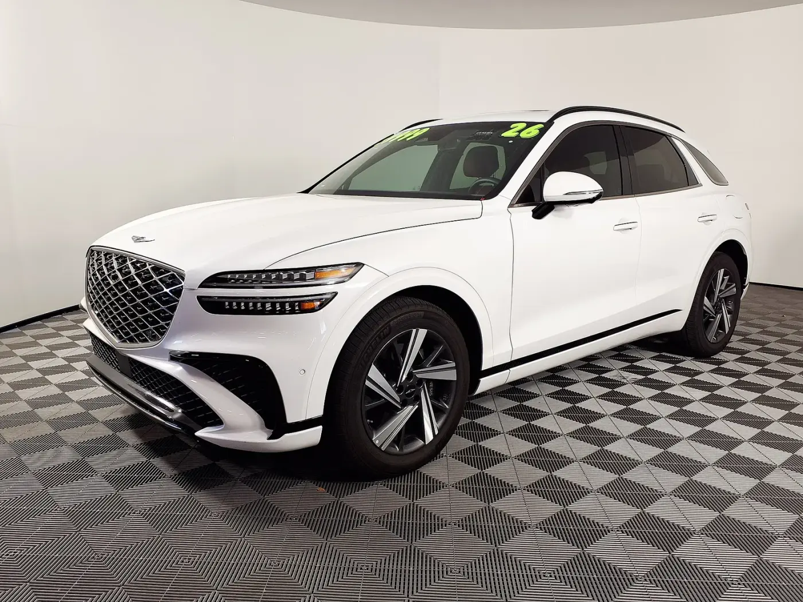

▲ 현대 투싼(NX4). 3분기 미국 판매 6만 4,075대(+23%)로 분기 판매 신기록을 세웠다 ⓒ OWS Photography (Wikimedia Commons, CC BY 4.0)
"역대 최고 3분기"라는 발표는 나왔다. 그런데 포드를 이겼다고는 말할 수 없다. 현대차 미국법인과 기아 미국법인은 10월 1일(현지) 나란히 9월·3분기 판매를 발표했다. 현대차는 9월 7만 7,439대(+9%), 3분기 24만 6,896대(+3%)로 둘 다 역대 최고였고, 기아는 9월 7만 7,009대(+18%), 3분기 23만 6,659대(+8%)로 회사 역사상 어떤 분기보다 많이 팔았다. 이 글은 9월 30일 점유율 프리뷰에서 소개한 콕스 오토모티브 추정치와 실제 발표를 나란히 놓고, 현대차그룹의 포드 추월을 확인된 숫자로만 따져본다. 10월 2일 포드가 3분기 실적(509,764대)을 발표해 이 글의 판정을 10월 3일 갱신했고, 결론은 포드가 3위를 지켰다는 것이다. 현대차 브랜드 단독 숫자(24만 6,896대)와 그룹 합산이 섞이지 않도록 구분해 적었다.
1. 9월과 3분기, 현대차·기아 미국 성적표
현대차 미국법인 발표에 따르면 9월 판매는 7만 7,439대로 전년 동월(7만 1,003대)보다 9% 늘었고, 3분기는 24만 6,896대로 전년 동기(23만 9,069대)보다 3% 늘었다. 올해 1~9월 누적은 69만 7,464대(+3%)다. 기아는 9월 7만 7,009대(전년 6만 5,507대 대비 +18%), 3분기 23만 6,659대(+8%)이며 소매 판매만 따로 보면 9월 7만 429대(+19%), 3분기 22만 1,664대(+9%)로 역시 신기록이다. 기아의 1~9월 누적은 66만 7,386대(전년 63만 6,148대)다.
| 구분 | 9월 | 전년 동월 대비 | 3분기 | 전년 동기 대비 |
|---|---|---|---|---|
| 현대차 브랜드 | 77,439대 | +9% (역대 최고 9월) | 246,896대 | +3% (역대 최고 3분기) |
| 기아 | 77,009대 | +18% (역대 최고 9월) | 236,659대 | +8% (역대 최고 분기) |
| 현대차+기아 합산 (직접 계산) | 154,448대 | - | 483,555대 | - |
| 제네시스 | 확인 못 함 | - | 확인 못 함 | +6% (CNBC 보도) |
합산 48만 3,555대는 두 발표문 숫자를 더한 값이다. 서울경제 영문판(2026.10.2)도 두 법인의 9월 실적을 함께 전했고, 9월 합산은 15만 4,448대다. 두 값 모두 제네시스를 포함하지 않는다. 이 점이 아래 '추정 대 실제' 비교에서 가장 중요한 변수가 된다.
📍 숫자를 읽을 때 구분할 세 가지
① 현대차 브랜드 단독 24만 6,896대 — 현대차 미국법인 보도자료의 '현대'만 해당. ② 현대차+기아 48만 3,555대 — 두 법인 합산, 제네시스 제외. ③ 현대차그룹 — 콕스가 쓰는 범위로 제네시스까지 포함. 콕스의 511,421대는 ③이므로, 실제와 비교하려면 ②에 제네시스를 더해야 한다.
현대차 보도자료는 현대차 미국법인 9월·3분기 발표 바로가기에서, 기아는 기아 미국법인 발표 바로가기에서 확인할 수 있다.
2. 현대차: 투싼이 끌고 소나타가 올라탔다
현대차는 3분기 투싼이 6만 4,075대(+23%)로 분기 판매 기록을 세웠다고 밝혔다. 엘란트라는 4만 8,764대(+18%), 소나타는 1만 7,273대(+34%)로 모두 두 자릿수 증가다. 싼타페는 3만 9,112대(+5%), 팰리세이드는 3만 5,229대(-1%)였지만 9월 한 달로는 팰리세이드가 1만 327대로 52% 늘었다. 소나타 하이브리드는 판매가 전년의 두 배를 넘었고, 싼타페 하이브리드는 회사 역사상 최고 분기를 기록했다고 현대차는 밝혔다.
▲ 현대 투싼. 3분기 미국 판매의 약 26%(64,075대÷246,896대, 직접 계산)를 차지했다 ⓒ OWS Photography (Wikimedia Commons, CC BY 4.0)
| 차종 | 2026 3분기 | 2025 3분기 | 증감 |
|---|---|---|---|
| 투싼 | 64,075대 | 51,929대 | +23% (분기 기록) |
| 엘란트라 | 48,764대 | 41,444대 | +18% |
| 싼타페 | 39,112대 | 37,082대 | +5% |
| 팰리세이드 | 35,229대 | 35,585대 | -1% |
| 소나타 | 17,273대 | 12,928대 | +34% |
| 코나 | 16,779대 | 17,450대 | -4% |
| 아이오닉 5 | 10,382대 | 21,999대 | -53% |
| 베뉴 | 8,682대 | 8,265대 | +5% |
| 싼타크루즈 | 4,830대 | 6,412대 | -25% |
| 아이오닉 9 | 1,663대 | 3,164대 | -47% |
| 아이오닉 6 | 107대 | 2,810대 | -96% |
| 합계 | 246,896대 | 239,069대 | +3% |

▲ 현대 싼타페(전시 차량). 3분기 39,112대(+5%)로 팔렸고, 싼타페 하이브리드는 회사 역사상 최고 분기를 기록했다 ⓒ Chanokchon (Wikimedia Commons, CC BY-SA 4.0)
✔ 수치 확인 메모
아이오닉 5·6·9 3분기 합계는 1만 2,152대로 전년(2만 7,973대)보다 약 57% 적다(발표 표를 더한 계산). 합계가 3% 늘었어도 전기차는 크게 줄고 투싼·엘란트라·소나타 같은 내연·하이브리드 모델이 그 빈자리를 채운 구조다. 현대차는 전기차 감소 이유를 보도자료에서 따로 설명하지 않았으며, 세액공제 종료 영향은 별도 기사에서 다뤘다.
3. 기아: 셀토스·텔루라이드가 9월을 키웠다
기아는 9월 판매 7만 7,009대 가운데 스포티지가 1만 6,033대로 가장 많았고, K4(포르테 포함) 1만 2,658대, 텔루라이드 1만 1,927대, 쏘렌토 8,939대, 셀토스 7,682대 순이었다. 기아는 셀토스(+66%), 니로(+47%), K4(+43%), 텔루라이드(+42%), 쏘렌토(+37%), 카니발(+21%), K5(+15%), 스포티지(+10%) 등 8개 차종이 두 자릿수 성장했다고 밝혔다. 반면 전기차는 EV9 1,955대(-37%), EV6 835대(-60%, 기아 발표)로 줄었고(전년 동월 대비, 직접 계산), 새로 출시한 EV3는 514대였다.

▲ 기아 텔루라이드. 9월 11,927대로 전년 동월(8,408대)보다 42% 늘었다 ⓒ OWS Photography (Wikimedia Commons, CC BY 4.0)
| 차종 | 2026년 9월 | 2025년 9월 | 1~9월 누계 |
|---|---|---|---|
| 스포티지 | 16,033대 | 14,515대 | 145,746대 |
| K4/포르테 | 12,658대 | 8,829대 | 111,212대 |
| 텔루라이드 | 11,927대 | 8,408대 | 110,038대 |
| 쏘렌토 | 8,939대 | 6,502대 | 77,205대 |
| 셀토스 | 7,682대 | 4,635대 | 58,207대 |
| 카니발 | 6,804대 | 5,603대 | 61,540대 |
| K5 | 6,070대 | 5,290대 | 58,681대 |
| 니로 | 3,592대 | 2,446대 | 22,064대 |
| EV9 / EV6 / EV3 | 1,955 / 835 / 514대 | 3,094 / 2,116 / 0대 | 12,429 / 6,264 / 520대 |
| 쏘울 | 0대 | 4,069대 | 3,480대 |
| 합계 | 77,009대 | 65,507대 | 667,386대 |

▲ 기아 셀토스(2024년형, 미국 사양). 9월 7,682대로 전년 동월(4,635대)보다 약 66% 늘었다 ⓒ MercurySable99 (Wikimedia Commons, CC BY-SA 4.0)
8월 기아 실적은 기아 아메리카 8월 기사에서 다뤘다. 8월 월간 기록은 8만 3,793대였고 9월은 7만 7,009대로 줄었지만, 9월 단월로는 전년보다 18% 많다. 8월과 9월은 판매일수 등이 달라 단순 비교는 조심해야 하는데, 이번 발표문에는 판매일수가 없어 확인 못 함이다.
4. 추정 대 실제 — 9월 30일 프리뷰와 맞춰보면
9월 30일 프리뷰에서 소개한 콕스 오토모티브 3분기 추정(9월 24일 발표)과 각사 실제 발표를 같은 표에 놓았다. 현대차그룹 실제값은 제네시스 판매량을 확인하지 못해 현대차+기아 합산만 적었다.
| 회사 | 콕스 추정 | 실제 발표 | 차이 | 비고 |
|---|---|---|---|---|
| 현대차그룹 | 511,421대 (+6.5%) | 현대차+기아 483,555대 (제네시스 제외) | 제네시스 제외 시 -27,866대, 비공식 집계 포함 506,200대면 -5,221대 | 제네시스 공식 수치 확인 못 함, 굿카배드카 집계 22,645대 |
| GM | 671,706대 | 670,974대 (-5.5%) | -732대 (-0.1%) | GM 발표. 전년 710,347대 |
| 토요타 | 642,707대 | 633,223대 (+0.6%) | -9,484대 (-1.5%) | 토요타 북미법인 발표. 렉서스 93,056대 포함 |
| 포드 | 504,172대 (-7.1%) | 509,764대 (-6.6%) | +5,592대 (+1.1%) | 포드 공식 보도자료(10월 2일 발표, 10월 3일 갱신) |
GM은 추정과 732대 차이로 사실상 일치했고, 토요타는 추정보다 9,484대 적었다. GM은 쉐보레 43만 7,321대, GMC 15만 7,103대, 뷰익 4만 3,990대, 캐딜락 3만 2,560대로 구성돼 있고(GM Authority), 토요타는 9월 한 달 20만 1,306대(+8.4%)로 강했다. 이 두 곳이 추정에 근접했다는 사실은 콕스 추정이 대체로 정확했음을 보여주지만, 현대차그룹과 포드는 실제 발표가 추정과 방향이 엇갈렸다(5장 참고).
📍 제네시스 몫을 역산해 보면
콕스의 현대차그룹 추정 511,421대에서 현대차+기아 실제 483,555대를 빼면 27,866대가 남는다. 제네시스가 이 정도를 팔았을 때 콕스 추정과 맞아떨어진다는 단순 역산일 뿐 확인된 제네시스 판매량이 아니다. 제네시스의 3분기 판매량은 이번 조사에서 확인하지 못했다.
5. 포드를 실제로 추월했나 — 결과는 "못 넘었다"
결론부터 말하면 포드가 3위를 지켰다(10월 3일 갱신, 초판의 "판정 보류"를 정정). 포드는 3분기 509,764대(-6.6%)를 발표했고(포드 공식 보도자료 PDF 바로가기, 에스케이프·코르세어 단종 영향), 현대차+기아 483,555대(제네시스 제외)보다 26,209대 많다. 제네시스의 3분기 공식 수치는 확인하지 못했다. 굿카배드카 월별 집계(7월 6,947대+8월 7,635대+9월 8,063대=22,645대)를 비공식 값으로 더하면 현대차그룹은 506,200대(+5.4% 보도)이고 포드와의 격차는 3,564대(0.70%)로 오토헤럴드의 3,564대와 일치한다. CNBC는 포드가 "1,200대 미만" 앞섰다고 보도했는데, 원문은 403으로 열리지 않았고 검색 요약상 포드 경량차 507,395대 기준 1,195대로 보이나 이는 추론이다. 산정 기준에 따라 격차가 다른 이유는 포드 3분기 판매 기사에서 자세히 다뤘다.
| 항목 | 상태 | 수치 |
|---|---|---|
| 현대차 브랜드 | 확인됨 | 246,896대 |
| 기아 | 확인됨 | 236,659대 |
| 제네시스 | 공식 수치 확인 못 함 | 굿카배드카 집계 22,645대(7~9월, 비공식), CNBC +6% |
| 현대차그룹 합산 | 기준별로 다름 | 제네시스 제외 483,555대 / 비공식 집계 포함 506,200대 |
| 포드(링컨 포함) | 확인됨(포드 보도자료) | 509,764대(-6.6%), 콕스 추정은 504,172대 |
| 추월 여부 | 포드 3위 수성 | 격차 26,209대(제네시스 제외) / 3,564대(비공식 포함) / 약 1,200대(CNBC 경량차 기준) |
판정 조건은 단순했다. 포드의 3분기 판매량이 현대차+기아 483,555대에 제네시스 실판매량을 더한 값보다 적어야 현대차그룹이 앞선다. 포드 509,764대 기준으로는 제네시스가 26,209대 이상 팔아야 하는데, 비공식 집계 22,645대로는 3,564대가 모자란다. 참고로 1~8월 누적은 포드 133만 9,780대 대 현대기아그룹 126만 4,072대(굿카배드카 집계)였고, 1~9월 누적도 포드 1,516,279대 대 현대+기아 1,364,850대(제네시스 제외)로 격차가 151,429대다(포드 기사 기준). 분기 격차가 연간 순위 추월을 뜻하는 것도 아니다.
🔍 제네시스를 넣으면 격차는 얼마나 될까 (비공식 집계)
제네시스의 3분기 공식 판매량은 확인하지 못했다. 다만 굿카배드카 집계에는 제네시스의 7월 6,947대, 8월 7,635대(합 14,582대)와 전년 3분기 20,662대가 올라 있고, CNBC는 제네시스 3분기가 +6%라고 전했다. 이를 곱하면 3분기 약 2만 1,900대로 추정했었다(초판). 10월 3일 갱신 시점에는 굿카배드카에 9월 8,063대가 올라 3분기 합이 22,645대가 되어, 초판 추정(9월 약 7,300대)보다 9월이 약 760대 많았다. 다만 이 집계도 제네시스 공식 발표가 아니다.
이 값을 받아들이면 현대차그룹 합산은 506,200대, 포드 509,764대와의 격차는 3,564대(0.70%)다. 제네시스를 빼면 격차는 26,209대다. 이 글이 초판에서 "격차가 작아 단정하지 않는다"고 한 우려는 포드가 콕스 추정보다 많이 팔면서 현실이 됐다.
📊 콕스 추정과 실제 결과의 차이
콕스는 포드를 504,172대로 추정했지만 실제는 509,764대로 5,592대(약 1.1%) 많았다. 반대로 현대차그룹은 콕스 추정 511,421대에 비해 실제(비공식 집계 포함) 506,200대로 5,221대 적었다. 포드는 높게, 현대차그룹은 낮게 어긋나 콕스가 예상한 포드의 7,249대 열세가 실제로는 3,564대 우세로 뒤집혔다. 두 오차(5,592+5,221)의 합이 뒤집힌 폭(약 10,800대)과 같다.

▲ 제네시스 GV70. 제네시스는 이번 현대차·기아 발표에 포함되지 않아 별도 집계가 필요하다 ⓒ HJUdall (Wikimedia Commons, CC0)

▲ 기아 스포티지 하이브리드. 스포티지 하이브리드 판매는 9월 전년 대비 53% 늘었다 ⓒ Damian B Oh (Wikimedia Commons, CC BY-SA 4.0)
6. 하이브리드 판매 구조 — 확인된 것과 못 한 것
현대차는 3분기 하이브리드 판매가 35% 늘어 분기 기록을 세웠고, 9월 하이브리드는 39% 늘어 전체 판매의 28%를 차지했다고 밝혔다. 기아는 9월 하이브리드 판매가 152%, 전동화 차량 전체가 60% 늘었다고 했고, 쏘렌토 하이브리드 +112%, 스포티지 하이브리드 +53%, 카니발 하이브리드 +47%가 두드러졌다. 올해 출시한 신형 텔루라이드 하이브리드도 판매에 기여했다고 기아는 설명했다. 이 수치들은 10월 3일 PR Newswire 원문으로 재대조했다. 현대차 원문에는 "record Q3 hybrid sales increasing 35%"와 9월 +39%·전체의 28%가 그대로 있어 +35%는 3분기 수치가 맞다. 기아 원문은 하이브리드 +152%·전동화 +60%를 9월 문장과 분기 기록 문장 양쪽에 같은 수치로 적어, 기간이 9월인지 분기인지 원문만으로 갈리지 않는다.
| 회사 | 발표 내용 | 확인 못 한 것 |
|---|---|---|
| 현대차 | 3분기 하이브리드 +35% (분기 기록), 9월 +39%·전체의 28% | 3분기 하이브리드 판매량(대수) |
| 기아 | 하이브리드 +152%, 전동화 +60% (원문이 9월·분기 문장에 같은 수치 병기) | 9월·3분기 하이브리드 대수 |
| 토요타 | 3분기 전동화 363,367대(+28.5%), 전체의 57.4% | - |
| GM | CNBC 보도: 하이브리드는 콜벳 1종뿐, 전기차 크게 감소 | - |
| 혼다 | CNBC 보도: 3분기 +9.3%, 하이브리드 106,000대 이상 (기록) | - |
8월 월간 하이브리드가 5만 대를 넘었다는 내용은 8월 기사에서 다뤘다. 9월과 3분기 하이브리드의 정확한 대수는 이번 발표문에 없어 확인 못 함이다. 다만 하이브리드 약진은 현대차그룹만의 현상이 아니다. 토요타는 전동화 비중이 57.4%였고, 3분기 전체 판매는 0.6% 늘어 거의 제자리였다. 총 판매가 정체한 가운데 구성이 전동화 쪽으로 이동한 셈이다.

▲ 현대 엘란트라. 3분기 4만 8,764대로 18% 늘었다(사진은 엘란트라 하이브리드 전시차) ⓒ Charles from Port Chester, New York (Wikimedia Commons, CC BY 2.0)
7. 관세·환율·시장 환경 — 확인된 것만
이번 발표문에는 관세와 환율 얘기가 없다. 현대차 보도자료의 설명은 "SUV·세단·하이브리드 전반의 성장과 폭넓은 라인업"이 전부다. 확인된 외부 맥락은 다음과 같다. 콕스는 올해 미국 신차 판매 전망을 약 2% 올려 1,610만 대로 제시했고(CNBC 10월 1일), 휘발유 가격이 전미 평균 4.41달러(AAA)로 높아 대형 트럭·SUV 수요에 부담이라고 CNBC는 전했다. 더 오토와이어는 현대차가 관세로 수익성이 압박받을 것을 인정했고 2030년까지 미국 판매 차량의 80% 이상을 현지 생산하겠다는 목표를 제시했다고 전했다.
| 항목 | 상태 |
|---|---|
| 관세가 3분기 판매·가격에 미친 영향 | 확인 못 함 (발표문에 수치 없음) |
| 원·달러 환율이 현대차·기아 실적에 미친 영향 | 확인 못 함 |
| 현대차 2030년 미국 현지생산 80% 목표 | 더 오토와이어 보도, 직접 원문 확인 못 함 |
| 올해 미국 신차 판매 전망 1,610만 대 | CNBC 보도(콕스 전망 상향) |
| 평균 휘발유 가격 4.41달러 | CNBC 보도(AAA) |
| 3분기 미국 시장 전체 판매량 | 확인 못 함 |

▲ 현대차 앨라배마 공장(몬트고메리) 정문 표지석과 사무동 ⓒ Carol M. Highsmith (Wikimedia Commons, 퍼블릭 도메인)
현대차 3분기 성장률이 +3%라는 점도 짚어야 한다. GM이 5.5% 줄고 토요타가 0.6% 늘어난 시장에서 현대차는 3%, 기아는 8% 늘었다. 다만 시장 전체 3분기 판매량이 확인되지 않아 점유율이 얼마나 올랐는지는 확인 못 함이다.
8. 다음 관전 포인트
포드 3분기 실적은 이미 나왔다. 가장 먼저 볼 것은 제네시스 3분기 공식 판매량이다. 비공식 집계 22,645대가 공식과 같다면 격차 3,564대가 확정되고, 달라지면 그만큼 바뀐다. 콕스 추정에서 역산한 약 2만 7,900대는 실제와 맞지 않았다. 두 번째는 CNBC가 말한 "1,200대 미만"과 우리 계산(3,564대)의 산정 범위 차이를 풀어 줄 포드 모델별 판매표다(포드 3분기 판매 기사 참고). 세 번째는 옴디아 등이 내놓을 3분기 점유율로, 앞선 기사에서 1~8월 누적 점유율은 포드에 0.4%p 뒤져 있었다. 9월 미국 시장 전반의 전망은 9월 신차 판매 전망 기사, 콕스의 3분기 전망은 9월 26일 빅3 진입 전망 기사를 참고하면 된다.

▲ 미국 버몬트주 버링턴의 현대 딜러십. 월간·분기 판매는 이런 딜러 네트워크 판매를 합산해 발표된다 ⓒ Harrison Keely (Wikimedia Commons, CC BY 4.0)
9. 요약
현대차 3분기 미국 판매는 24만 6,896대(+3%), 기아는 23만 6,659대(+8%)로 각각 역대 최고 3분기·최다 분기다. 현대차 9월은 7만 7,439대(+9%), 기아 9월은 7만 7,009대(+18%)다. 현대차 단독과 현대차+기아 합산(483,555대, 제네시스 제외)을 구분해야 한다.
콕스 추정과 비교하면 GM(670,974대)은 732대, 토요타(633,223대)는 9,484대 차이였다. 포드는 콕스 추정(504,172대)보다 5,592대 많은 509,764대(-6.6%)를 팔아 3위를 지켰다. 제네시스 공식 수치는 확인하지 못했고, 격차는 제네시스를 빼면 26,209대, 비공식 집계 22,645대를 더하면 3,564대, CNBC 경량차 기준으로는 약 1,200대다. 자세한 기준 차이는 포드 3분기 판매 기사를 참고하면 된다.
하이브리드가 성장의 축이었다. 현대차 3분기 하이브리드 +35%(원문 재대조 확인), 기아 +152%(9월·분기 문장 병기)가 발표됐으나 판매 대수와 관세·환율 영향은 확인하지 못했다. 제네시스 공식 3분기 수치가 나오면 격차를 다시 확정할 수 있다.